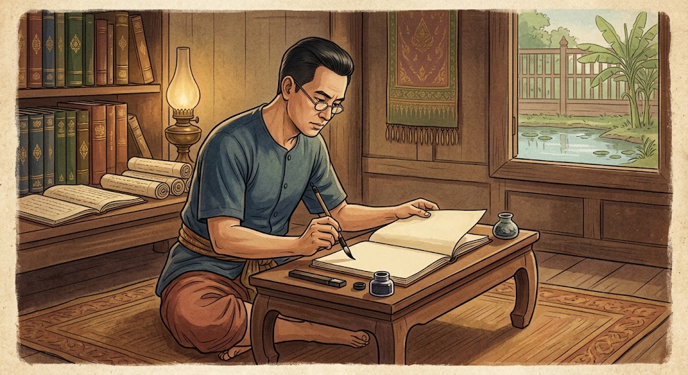

การวิเคราะห์คุณค่าวรรณคดี
การวิเคราะห์คุณค่าวรรณคดี คือ การพิจารณาและอธิบายคุณค่าที่ปรากฏในวรรณคดีหรือวรรณกรรม
โดยพิจารณาทั้งด้านเนื้อหา ภาษา แนวคิด และสังคม เพื่อให้เข้าใจความหมายและความสำคัญของเรื่องได้อย่างลึกซึ้ง
คุณค่าของวรรณคดีแบ่งออกเป็นหลายด้าน ได้แก่ คุณค่าด้านเนื้อหา คือ ข้อคิด คติสอนใจ และแนวคิดที่ผู้แต่งต้องการสื่อ เช่น การทำความดี ความกตัญญู และความเสียสละ คุณค่าด้านวรรณศิลป์ คือ ความไพเราะและความงดงามของภาษา เช่น การใช้คำคล้องจอง การเปรียบเทียบ และการใช้โวหารต่าง ๆ คุณค่าด้านสังคมและวัฒนธรรม คือ การสะท้อนวิถีชีวิต ความเชื่อ ประเพณี และค่านิยมของคนในสมัยนั้น รวมถึงคุณค่าด้านอารมณ์ที่ทำให้ผู้อ่านเกิดความรู้สึกและจินตนาการร่วมกับเรื่อง
การวิเคราะห์คุณค่าวรรณคดีช่วยให้ผู้อ่านเข้าใจวรรณคดีมากขึ้น และสามารถนำข้อคิดที่ได้ไปประยุกต์ใช้ในชีวิตประจำวัน